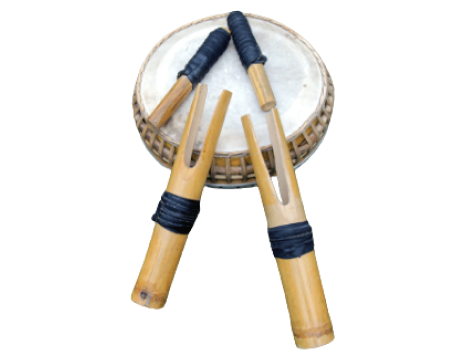

Gorontalo

Gambar di atas adalah polopalo, alat musik khas gorontalo yang unik karena mengeluarkan suara dari badan alat itu sendiri. Polopalo mengeluarkan bunyi jika dipukul. Polopalo ini terbuat dari bambu dan dibentuk seperti garpu yang besar. seperti gambar diatas, polopala memiliki pemukul sendiri.